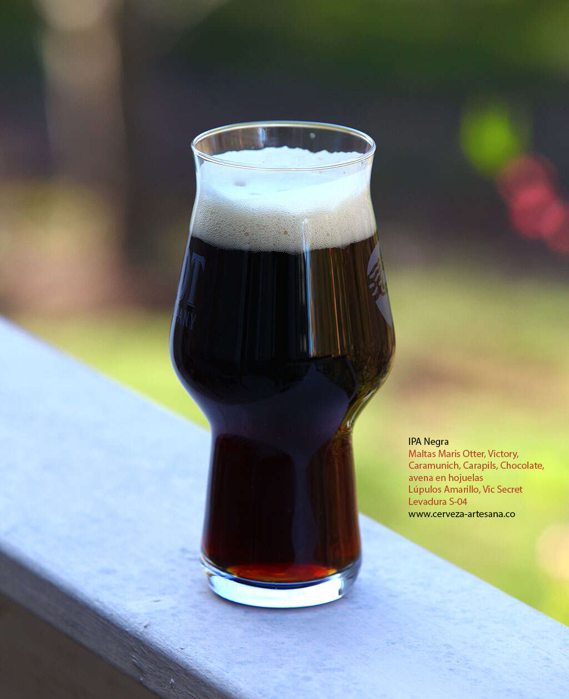
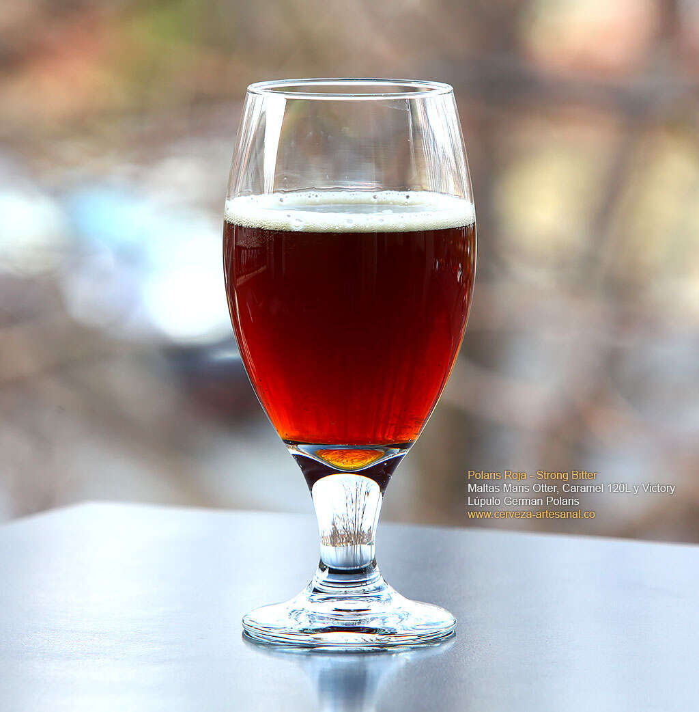
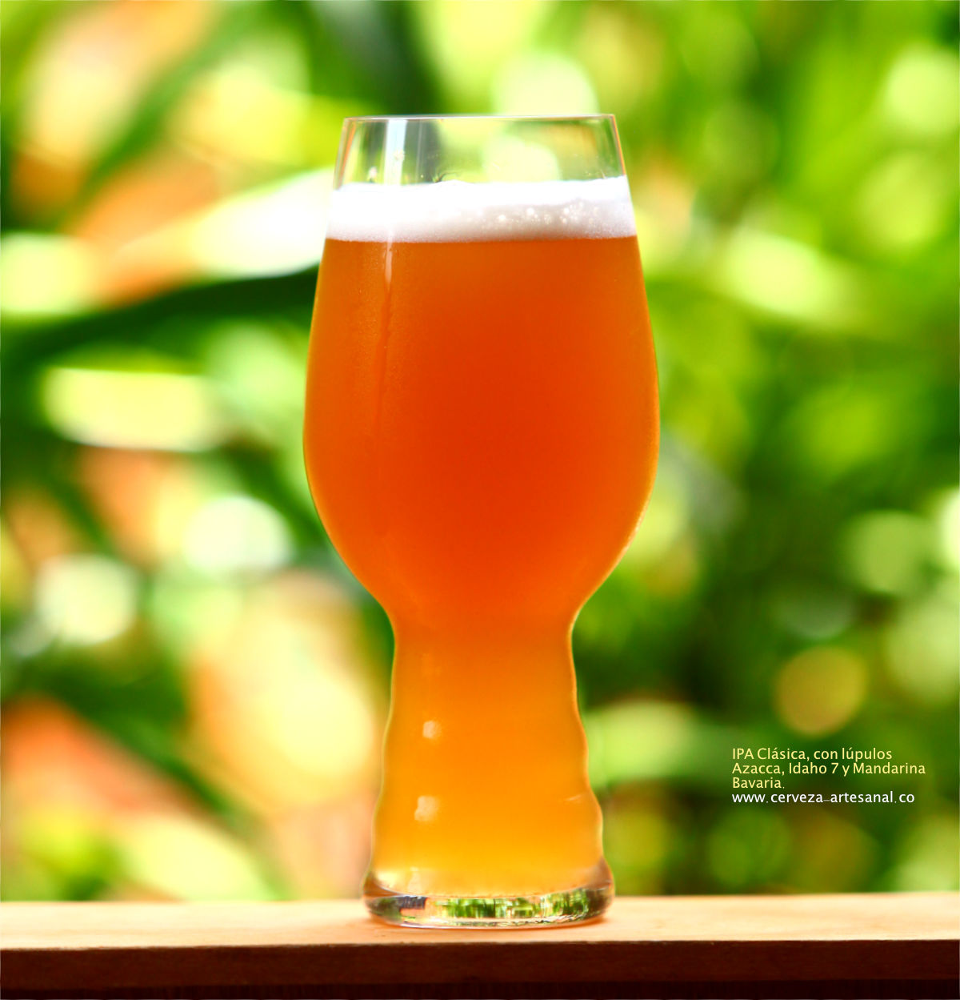
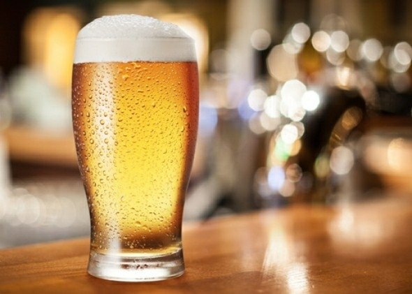
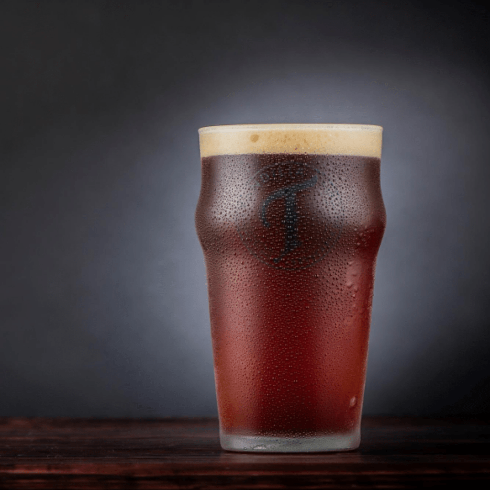

LAGER son las cervezas más populares en Europa occidental; normalmente son cervezas claras, para servirse frías con una alta drinkability. Dentro de las Lager podemos encontrar tres subtipos principales: la Pilsen, la Lager especial y la Lager extra

PORTER La malta tostada también está presente en esta cerveza, con un sabor muy intenso, de toque amargo debido al lúpulo, además de notas de caramelo y chocolate. La tonalidad marrón de la bebida deja una espuma color canela. Se acompaña con carnes y platillos fuertes, aunque también entran platillos dulces.

RED Por lo regular esta variedad brinda aromas cítricos y, al probarla, es posible sentir la mezcla del lúpulo con la malta caramelo. El nombre de este último ingrediente se debe al proceso de tostamiento, el cual le da una caramelización en su interior y unos tonos rojizos que se reflejan en el color de la cerveza.

IPA La historia de la India Pale Ale se remonta a la época del Imperio Británico, cuando se extendía hasta la India. Para llevar la cerveza hasta esos confines del planeta tardaban días y perdía su calidad, por lo que se le agregó lúpulo, una planta familiar de la cannabis. La hierba la hace una bebida relajante, además de darle aromas predominantemente florales y frutales.

GOLDEN De origen inglés, la fermentación de estas cervezas es alto. Espumosa, en la boca se perciben sabores tropicales y amargos, en parte por el lúpulo que se utiliza; esto último encaja bien con platillos ahumados como carnes, al crear un contraste con el sabor de la grasa. Su nivel de alcohol es de cerca de 6%.

BARLEY Es la cerveza con más cuerpo, color intenso y muy espesa. Al igual que la porter, esta bebida tiene un sabor a maltas caramelizadas perfectamente tostadas. Los aromas por lo general son de café y chocolate y su contenido de alcohol es muy alto, entre 6 y 12 por ciento. Se recomienda tomarla con carnes y quesos curados de sabores fuertes.